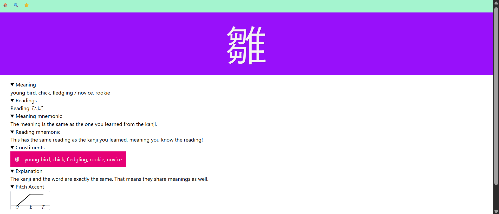
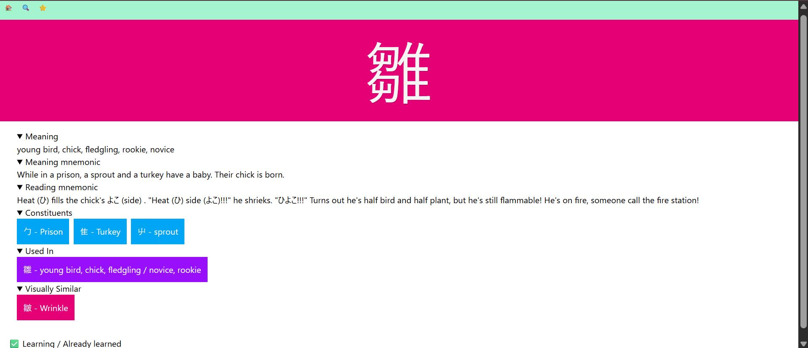
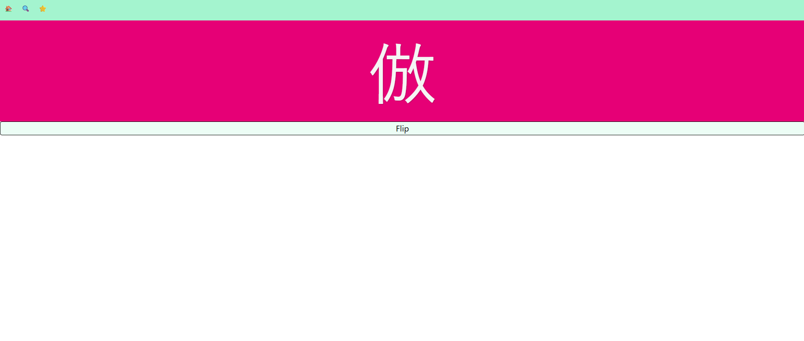

KanjiLearner – Full-Stack Spaced Repetition App
Date: July 2025 – Sept 2025
KanjiLearner is a full-stack web application I developed to help learners study kanji using a spaced repetition system (SRS).
It includes lessons, reviews, mistake tracking, and customizable mnemonics.
🚀 Tech Stack
- React (TypeScript, Vite) + Tailwind CSS
- Django + PostgreSQL
- Deployed to Vercel (frontend) and Render (backend + DB)
📸 Screenshots

Dashboard view showing available lessons, reviews, and recent mistakes.

Login screen for user authentication and session handling.

Vocabulary entry details, including readings, meaning, and example usage.

Radical entry view showing components and related kanji dependencies.

Kanji entry page displaying readings, mnemonics, and associated vocabulary.

Dictionary search view for quickly finding radicals, kanji, or vocabulary.

Review runner in progress before flipping the card (user inputs their answer).

Review runner after flipping the card, showing the correct answer and feedback.
📌 Outcome
Within three months I shipped a production-ready MVP that I continue to use for my own Japanese studies.
The project demonstrates end-to-end ownership of data modeling, API design, frontend development, and production deployment.
⬅ Back to Portfolio Home